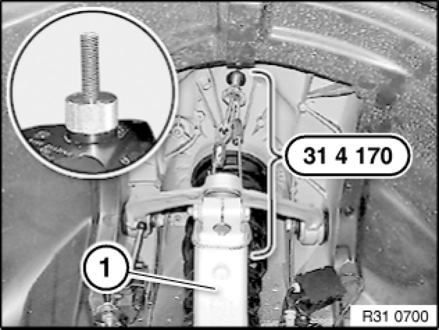
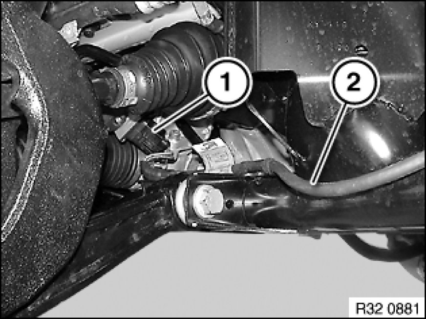
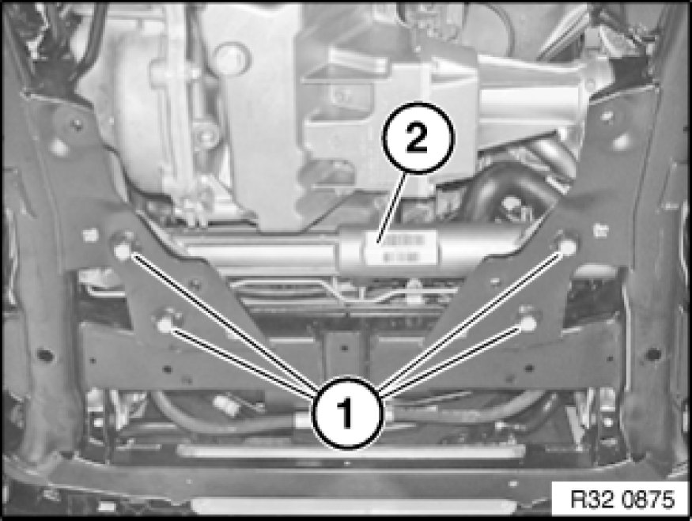
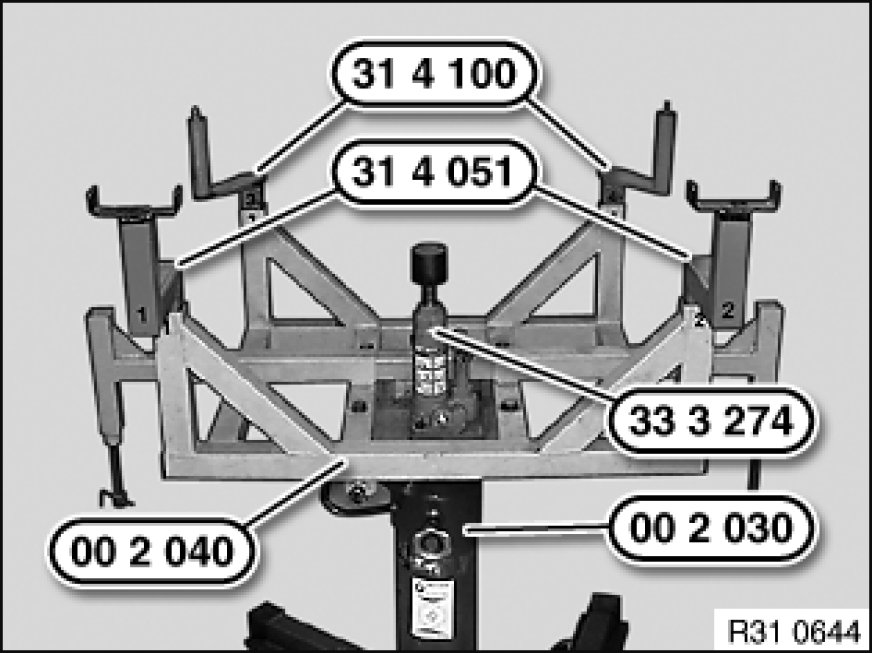
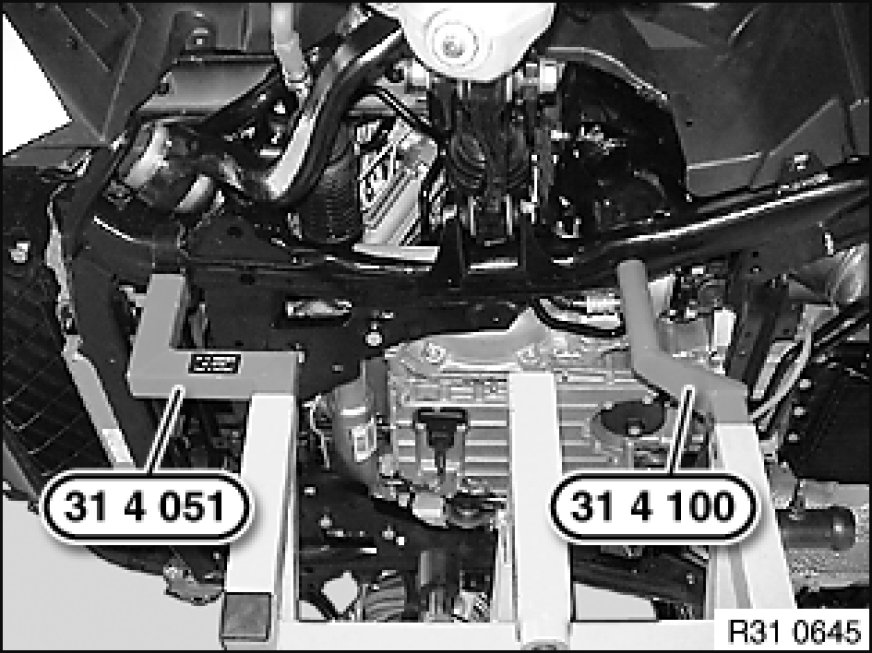
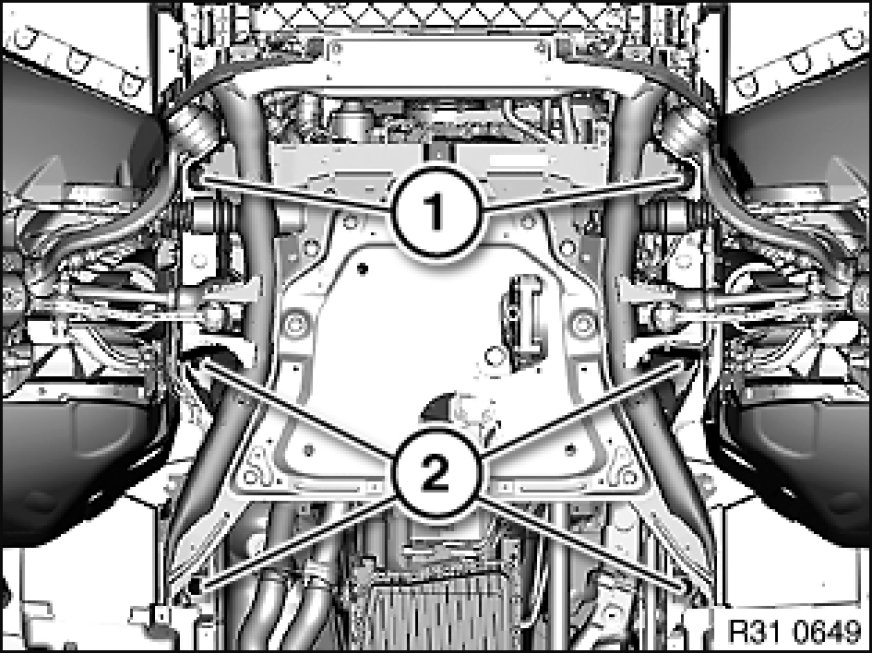

Lowering/Raising Front Axle Carrier (Special Tool SWZ 00 2 040)
31 11 506 - Lowering/raising front axle carrier (special tool SWZ00-2040)

Special tools required:
- 00 2 030 00 2 030 Universal Hydro-Lifter Basic Unit
- 00 2 040 00 2 040 Basic Take-Up Fixture
- 31 4 051
- 31 4 100
- 31 4 170

Important!
Before lowering front axle carrier:
In order to avoid damage to lifting platform, perform weight compensation on vehicle.
Load spring strut domes with sand bags.

Warning!
Danger to life!
Secure engine in installation position with special tool to prevent it from falling down.

Necessary preliminary tasks:
- Secure engine in installation position with special tool
- Remove front wheels

Important!
Use special tool to avoid preliminary damage to ball joint in upper control arm and the necessary removal of the swivel bearing.
Press plug on left and right out of spring strut dome.
Secure swivel bearing (1) on left and right with special tool 31 4 170 in installation position.

Remove underbody protection at front and rear.
Remove steering gear cover at top left and right.
Remove reinforcement plate.
Partially detach front left and right wheel arch covers (rear section) in rear area.
Remove lower control arm from spring strut holder.

Version with active steering:
Disconnect plug connection (1) and unclip line (2) from front axle carrier.

Release nuts and remove screws (1) towards bottom.
Tie up power steering gear (2).
Installation Note:
Replace screws and nuts.
Tightening torque 32 00 1AZ.

If necessary, position special tool 00 2 040 00 2 040 Basic Take-Up Fixture with a 2nd person helping on workshop jack 00 2 030 00 2 030 Universal Hydro-Lifter Basic Unit.
Insert special tools 31 4 051 and 31 4 100 into corresponding mountings of special tool 00 2 040 00 2 040 Basic Take-Up Fixture.
Lower special tool 33 3 274.

Note:
The jacking points on the left side are shown.
Align special tools 31 4 051 and 31 4 100 to front axle carrier.
Support front axle carrier by operating workshop jack 00 2 030 00 2 030 Universal Hydro-Lifter Basic Unit.

Release screws (1, 2).
Installation Note:
Check threads for damage; if necessary, repair with Helicoil thread inserts Service and Repair.
Tighten down first screws (1) and then screws (2).
Tightening torque 31 10 1AZ.
Important!
Risk of damage!
Follow operations must be carried out during lowering:
- Remove heat exchanger from front axle carrier and tie up
- Remove stabilizer (conventional) from front axle carrier and tie back
- Remove all hydraulic lines on front axle carrier or stabilizer retaining bracket and tie up
- Version with active front steering: Disconnect plug connection and expose connecting line up to power steering gear
Lower front axle carrier by max. 10 cm.
After installation:
- Perform chassis alignment check
- Carry out steering angle sensor adjustment/adjustment for active front steering Adjustments